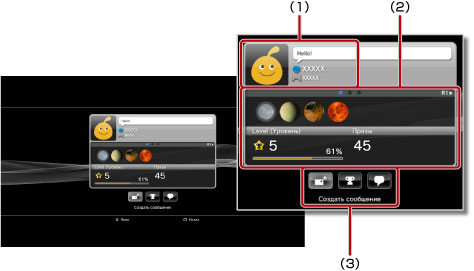
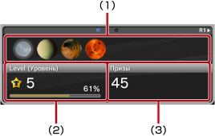

Друзья > Список друзей > Просмотреть профиль
Просмотреть профиль
Для использования этой функции может потребоваться обновление системного программного обеспечения.
Вы можете просмотреть свой профиль или профиль друга. Чтобы открыть профиль друга, выберите его аватар.

(1) |
Статус |
|---|---|
(2) |
Информация |
(3) |
Контрольная панель |
Подсказка
Подробнее о статусе см. в разделе  (Друзья) > [Список друзей] > [Проверка статуса] в данном Руководстве.
(Друзья) > [Список друзей] > [Проверка статуса] в данном Руководстве.
Просмотр информации на экране профиля
Профиль содержит информацию о полученных призах и категориях призов, а также подробные сведения о ваших друзьях. Для прокрутки используйте кнопки L1 и R1.

(1) |
Недавно полученные призы |
|---|---|
(2) |
Нынешний уровень и переход к следующему |
(3) |
Общее число полученных призов |
Контрольная панель в меню [Профиль]
При просмотре профиля можно выполнять некоторые действия с помощью контрольной панели. Набор пиктограмм на контрольной панели зависит от статуса друга.
 |
Меню (название игры) | Список действий, которые можно выполнить в игре, в которую вы играете. |
|---|---|---|
 |
Добавить друга | Отправка запроса на добавление в список друзей. |
 |
Лист сообщений | Просмотр списка сообщений, которыми вы обменивались с другом. |
 |
Создать сообщение | Создание нового сообщения. |
 |
Сравнить призы | Сравнение ваших призов и призов друга. |
 |
Начать новый чат | Начало нового чата. |
 |
Ответ на запрос о добавлении друга | Ответ на запрос о добавлении друга. |
 |
Добавить в блок-список | Добавление друга в блок-список. |
 |
Удалить из блок-списка | Удаление друга из блок-списка. |
Подсказки
- Скрыть контрольную панель нельзя.
- При просмотре своего профиля контрольная панель не отображается.
Изменение цвета фона на экране вашего профиля
Выберите закладку в левом верхнем углу экрана профиля и нажмите кнопку  , чтобы открыть палитру цветов. Выберите на палитре цвет фона для экрана вашего профиля.
, чтобы открыть палитру цветов. Выберите на палитре цвет фона для экрана вашего профиля.

Подсказка
Вы не можете изменить цвет фона на экранах профиля других пользователей.
Сравнение статуса по призам
1. |
В разделе |
|---|---|
2. |
Выберите на контрольной панели
|
3. |
Выберите игру.
|